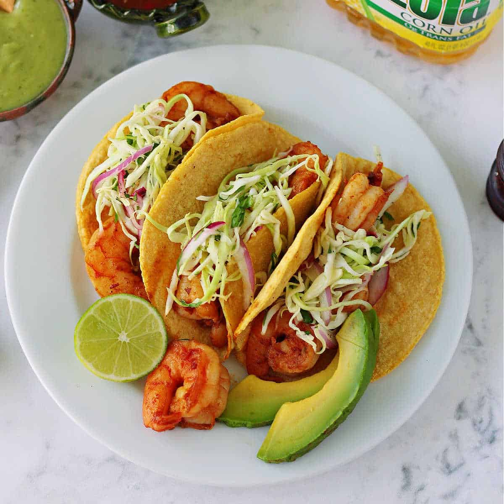

Shrimp Tacos

Description
Amazing and flavorful shrimp tacos ready to be made right at home. Shrimp seasoned with the perfect amount of spice and zestiness, along with sour cream and lime will have you eating more than you should.
This easy to make recipe will be having you make these delicious tacos daily.
Ingredients
- 20 Tortillas
- 3 pounds of shrimp
- 6 tbsp olive oil
- 2 tbsp chili powder
- 1 tsp mayonnaise
- 1/2 red cabbage chopped
- 3 tsp white vinegar
- 1 bunch of clinatro chopped
- 2 bunches scallions chopped
Steps
- Mix lime juice, 3 tbsp of olive oil, mayonnaise, and shrimp together in a bowl. Alow this to marinade for an hour
- Mix cabbage, scallions, 3 tbsp olive oil, vinegar, and cilantro in a bowl to prepare a slaw.
- Heat torillas about 20 secs per side over a frying pan at medium heat
- Prepare grill by heating up on medium head, lighly oiling the surface
- Remove the shrim from the marinade and grill till opaque. Add shrim to each tortilla and top with the slaw.